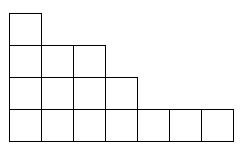

Лесенкой называется набор кубиков в один или несколько слоёв, в котором каждый более верхний слой содержит кубиков меньше, чем нижний.

Подсчитать число лесенок, которое можно построить из N кубиков.
На входе записано число N (1 ≤ N ≤ 200).
Вывести искомое число лесенок.
3
2